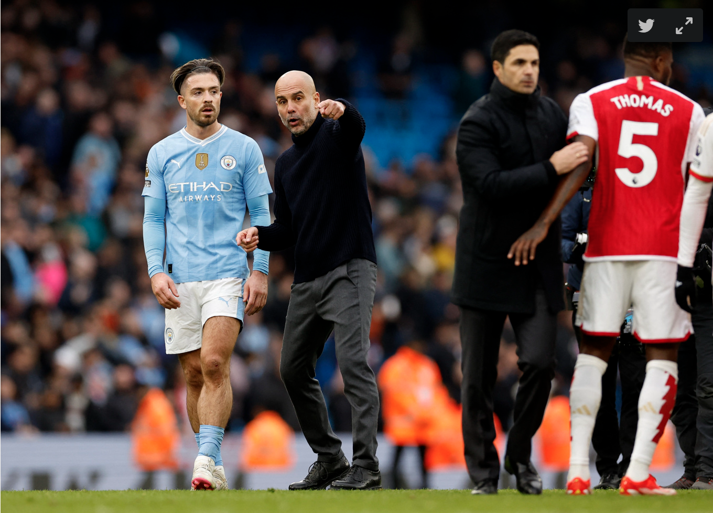
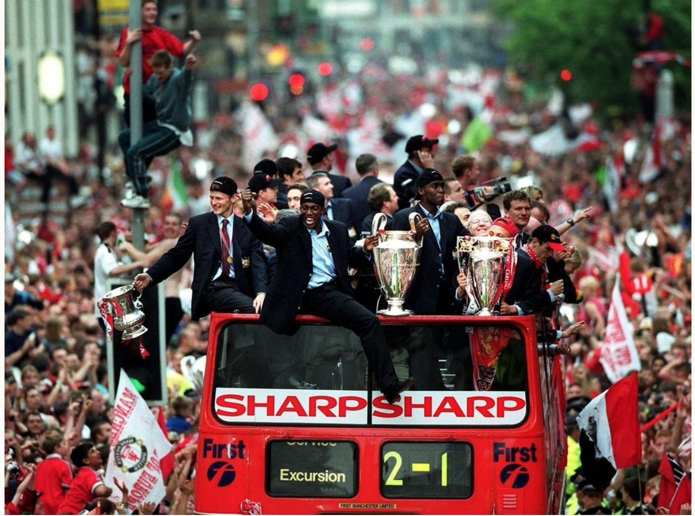

Thứ bảy, 25/5/2024, 13:20 (GMT+7)
Chuyên gia Alex Keble đánh giá HLV Pep Guardiola tạo ra cuộc cách mạng chưa từng có và giúp Man City khác biệt với những nhà vô địch vĩ đại khác trong lịch sử Ngoại hạng Anh.
Thắng West Ham 3-1 ở vòng hạ màn ngày 19/5 để đoạt Ngoại hạng Anh, Man City trở thành CLB đầu tiên vô địch hạng đấu cao nhất bốn lần liên tiếp trong 135 năm lịch sử bóng đá Anh.
Sunderland và Aston Villa vào những năm 1890; Huddersfield Town vào những năm 1920; Arsenal những năm 1930, Man Utd những năm 1960; Liverpool những năm 1970 và 1980; Man Utd những năm 1990, 2000 - tất cả đều không thể lập được thành tích như Man City. Nhưng liệu điều đó có khiến Man City trở thành CLB vĩ đại nhất lịch sử bóng đá Anh?
Guardiola giành sáu trong bảy chức vô địch Ngoại hạng Anh gần nhất, với những thay đổi và cải tổ nhỏ qua từng mùa. Trong giai đoạn đó, Liverpool có ít nhất một cuộc đại tu lớn, Arsenal gặp khó giai đoạn hậu Arsene Wenger và dần lột xác dưới thời Mikel Arteta. Man Utd vẫn thiếu ổn định, còn Chelsea trải qua nhiều chu kỳ đến nỗi mùa giải giành danh hiệu của Antonio Conte tưởng như đã diễn ra cách đây hàng chục năm, nhưng đó lại là năm đầu tiên Guardiola làm việc tại Anh.
Man City cũng thay đổi rất nhiều trong bảy năm qua, nhưng chỉ thực hiện từng bước nhỏ. Quá trình chuyển đổi - từ những năm với Leroy Sane và Raheem Sterling, qua thời kỳ với Ilkay Gundogan thủ lĩnh ở khu trung tuyến sang hệ thống bốn hậu vệ hiện tại - diễn ra liền mạch và gần như không thể nhận ra.

HLV Guardiola chỉ bảo Jack Grealish ngay sau khi tan trận Man City hòa Arsenal 0-0 ở vòng 30 Ngoại hạng Anh trên sân Etihad ngày 31/3
Không tính lần cán đích thứ ba ở mùa đầu tiên dưới trướng Guardiola, trung bình Man City đạt 91,1 điểm, 96,4 bàn thắng, 30,0 bàn thua, 4,6 trận thua và tỷ lệ thắng 75,9% mỗi mùa qua bảy mùa gần nhất tại Ngoại hạng Anh. Thầy trò Guardiola đoạt 17 danh hiệu, với đỉnh cao là cú ăn ba mùa trước, và vẫn còn chung kết Cup FA với Man Utd hôm nay 25/5.
Trước Man City, CLB Anh duy nhất khác giành cú ăn ba - Champions League, Cup FA, Ngoại hạng Anh - là Man Utd của HLV huyền thoại Sir Alex Ferguson năm 1999. Theo các thước đo thống kê, họ chỉ nhỉnh hơn Man City về số trận thua, trung bình 4,0 trận mỗi mùa so với 4,6 của đội bóng dưới trướng Guardiola.
Nhưng mọi so sánh giữa City với các CLB vĩ đại khác cũng cần có sự đánh giá chủ quan. Man Utd là đội đầu tiên từ năm giải VĐQG hàng đầu tại châu Âu giành được cú ăn ba - thành tích được xem là khó tin những năm 1990.
Sau Man Utd, nhiều đội khác đã làm được điều này, gồm Man City, Real Madrid, Bayern (hai lần), Barca (hai lần). Điều này cho thấy trong thời đại "Siêu CLB", khi một số đội châu Âu thống trị giải quốc nội, việc giành cú ăn ba đã trở nên dễ dàng hơn.
Hơn nữa, Man Utd của Ferguson cũng tiên phong về mặt chiến thuật trong bóng đá Anh, như Man City dưới thời Guardiola. Theo Michael Cox giải thích trong cuốn sách "The Mixer: The Story of Premier League", các ý tưởng chiến thuật ở lục địa châu Âu đã đi trước nước Anh rất nhiều vào những năm 1990. Việc Man Utd tiến sâu ở Champions League giúp Ferguson học hỏi nhiều điều.
Các cầu thủ Man Utd diễu hành xe bus mui trần mừng cú ăn ba ở mùa 1998-1999.
Man Utd trở nên kiên nhẫn hơn trong việc kiểm soát bóng, khi phần còn lại của Ngoại hạng Anh vẫn đang trong giai đoạn tranh giành hàng tiền vệ. Ngoài ra,việc David Beckham cắt vào trung lộ từ cánh phải hay Ryan Giggs lao lên từ cánh trái là những đột phá lớn cuối thập niên 1990.
Mặt khác, Man Utd khi đó chỉ có một đối thủ cạnh tranh tại Ngoại hạng Anh với Arsenal về nhì cả ba mùa giải. Trong khi đó, Man City phải đua tranh với Liverpool rồi Arsenal, và nhiều lần chỉ định đoạt danh hiệu ở vòng cuối.
Man City chắc chắn vượt trội về mặt kỹ thuật và gặt hái thành công nhiều hơn so với Man Utd giai đoạn 1998-2001. Tuy nhiên, cách Ferguson tạo ra một nền tảng mới - cả về mặt chiến thuật lẫn việc giành cú ăn ba - cho Man Utd là một phần của lịch sử.